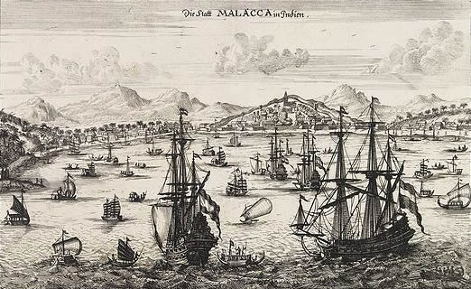

Founding of Melaka
1402
In the early 15th century, Parameswara, a Sumatran prince, embarked on a journey that would change the course of history. Fleeing from the turmoil of his homeland, he arrived on the shores of what is now modern-day Melaka and decided to establish a new kingdom. With its strategic location along the bustling trade routes of the Straits of Malacca, Melaka quickly grew into a prosperous and cosmopolitan city. This newfound kingdom attracted traders from China, India, Arabia, and beyond, making it a thriving center of commerce and culture in Southeast Asia.
Portuguese Capture Melaka
1511
The year 1511 marked a pivotal moment in Melaka's history when Afonso de Albuquerque, a Portuguese admiral, led a determined assault on the city. The Portuguese forces successfully captured Melaka, bringing an end to the prosperous Melaka Sultanate. This event transformed the city into a hub of Portuguese influence in Southeast Asia, and it marked the beginning of a new chapter in Melaka's history as a European colony. The legacy of this period can still be seen in the remnants of the A Famosa fortress, a testament to the Portuguese presence in Melaka.
Dutch Capture Melaka
1641
In the 17th century, the Dutch East India Company set its sights on the lucrative trading post of Melaka. The Dutch forces, led by Admiral Cornelis Matelieff de Jonge, launched a successful siege against the Portuguese, leading to the capture of Melaka in 1641. This marked a significant shift in power, as Melaka came under Dutch control. The Dutch influence can be seen in the development of the city, including the establishment of a town called Malakka (modern-day Malacca City) within their territorial holdings.
UNESCO World Heritage Site Designation
2008
In recognition of its rich historical and cultural heritage, in 2008, Melaka, along with George Town in Penang, received the prestigious UNESCO World Heritage Site designation. This acknowledgment was a testament to the city's enduring significance in preserving the diverse influences of its past, from Malay, Chinese, Indian, and European cultures. Today, Melaka continues to thrive as a sought-after tourist destination, offering visitors a unique blend of historical sites, traditions, and a vibrant local population, all contributing to the city's exceptional charm and allure.